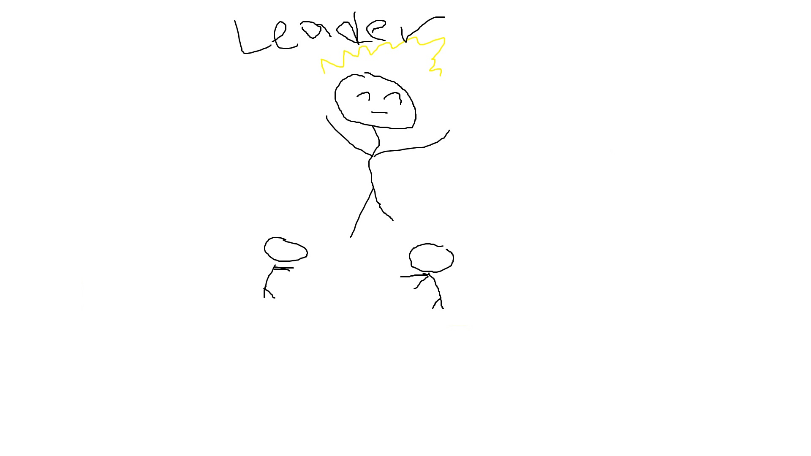
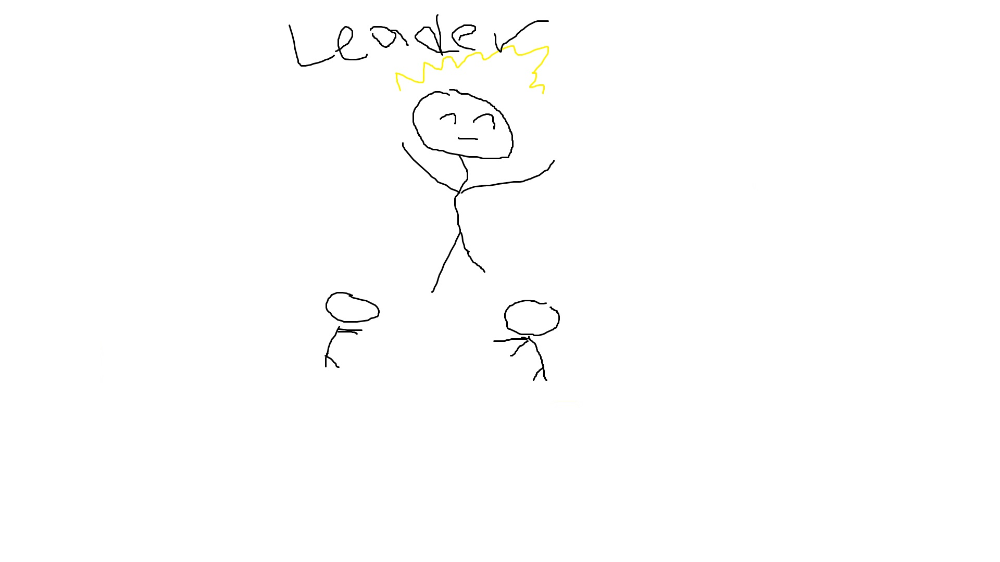
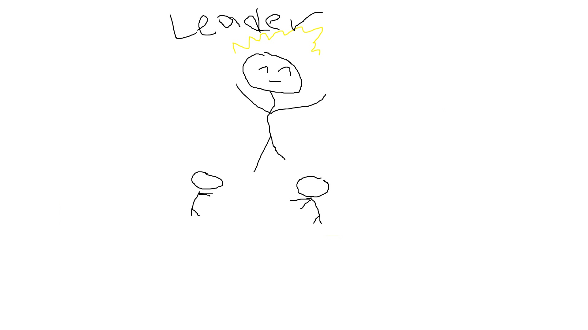

Shahmir Taqi
My name is Shahmir Taqi. I currently own a degree in Business Marketing, with my alma mater being the University of California, Riverside. I would describe myself as a confident, outgoing, and collaborative individual. At the current moment, I am compiling as much experience as I can in my field in order to maximize my ability to ensure quality work to anywhere that decides I am fit to be in. For any company that expresses interest in me as a candidate, just know that, that from the first day, I will spend my time making sure that I prove the description I have given myself. From the day I was a child, I have done nothing but prove myself to people.
What are my hobbies? Well, most of my hobbies are befit of the average person. I am the type to enjoy a nice video game after a long day of work. However, in order to actually stimulate my brain, I usually play the kinds of video games with riveting stories and lessons to teach about life itself. I am the type of person to be all about self improvement. That is why, as well as playing those certain types of video games, I also divulge myself in reading various types of self improvement books. The most recent one I am reading is called "Be Yourself, or Be Better" by Manuel Cervantes. When I am not trying to spend time improving myself, I am spending time making art, dabbling in bonsai, and going outside to experience the world around me. I, myself, am an avid rock climber. Through this skill, I have a ton of excellent memories of being able to explore the world from a new perspective. Instead of a 2D plane of exploration, I am able to experience different places in a more three dimensional way. Details like those are something that I always love to think about.
My qualifications include the following: I am advanced in multiple Windows programs, such as Excel, Word, and PowerPoint. For all of these programs, I have the required qualifications and certifications to show that I am fully prepared to take on any task that requires these programs. In terms of languages, I am fluent in four different ones, including Spanish, French, Hindi, and of course, English. In college, I also signed up to receive many certifications, including CPR and first aid. During my experience as an EMT, I was constantly under a pressure filled environment. This environment kept me on my toes and made me excel in fast paced environments. If any compnay decides I am worth their time, just know that any situation they put me in will be faced with utmost determination and a drive to strive in any sort of environment that I am put into. If you need an out of the box thinker, then sign me right up. There were many times during my pursuit of my degree where I had to think of unconventional ways to succeed. If you need a leader, than look no more. There were many times during my past job experiences where I had to step up as a leader. Usually, due to my more extraverted personality, I was effeciently able to connect everyone on the team, and ensure that success would be gauranteed no matter the situation we had to face.
Experience
Crew Member
• Handled cash and card orders
• Collaborated with other crew members to ensure quick and quality service
• Experience with customer service and dealing with customer complaints
Personal Assistant
• Responsible for filing reports and meetings
• Maintained scheduling for CEO
Security Guard
• Observe and report suspicious behavior
• Keep out transients and homeless
• Checked in HOA guests and dealt with resident questions
• Collaborated with other guards to ensure a safe environment
Education
UC Riverside
Portfolio
 



